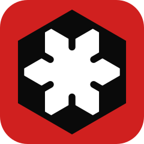

Cauce
Nex-Industries
Nuevo
Abrir modelo
Motor
2.2 · como EPANET de escritorio
2.3 · rápido
Salir
Modelo
Revisión
Correr
Escenario
Datos
Consignas
Comparar
Informes
Scripts
Glosario
Ajustes
Colorear
Por tipo y diámetro
Por horizonte de proyecto
Abierto / cerrado
Resultados de la corrida
Diferencias de la comparación
Rótulos
Flechas
Grosor por caudal
3D
Toda la red
Editar red
Seleccionar
Mover
Nudo
Tubería
Tanque
Embalse
Válvula
Bomba
Partir
Unir
Área
Rótulo
Borrar
Long. auto
Deshacer
Salir
Nex-Industries
presenta
Cauce